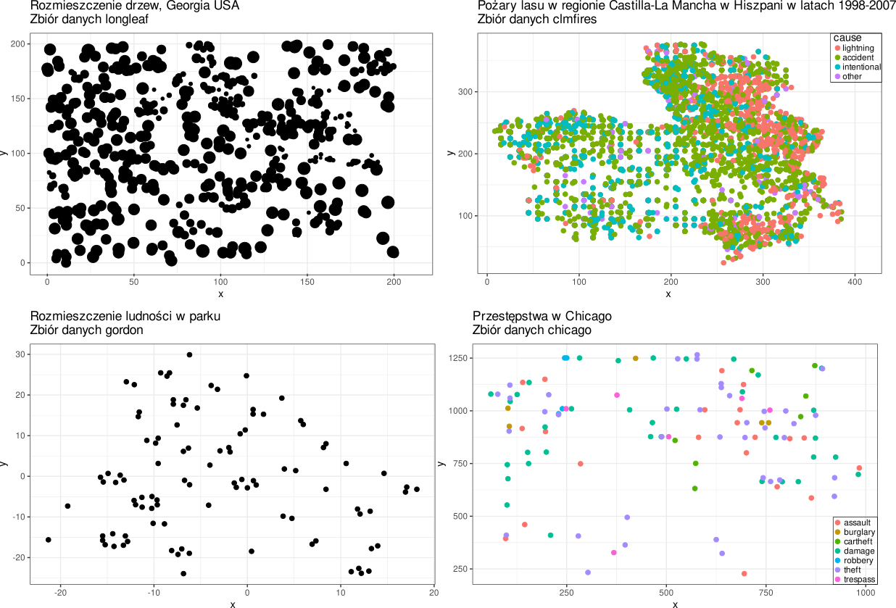
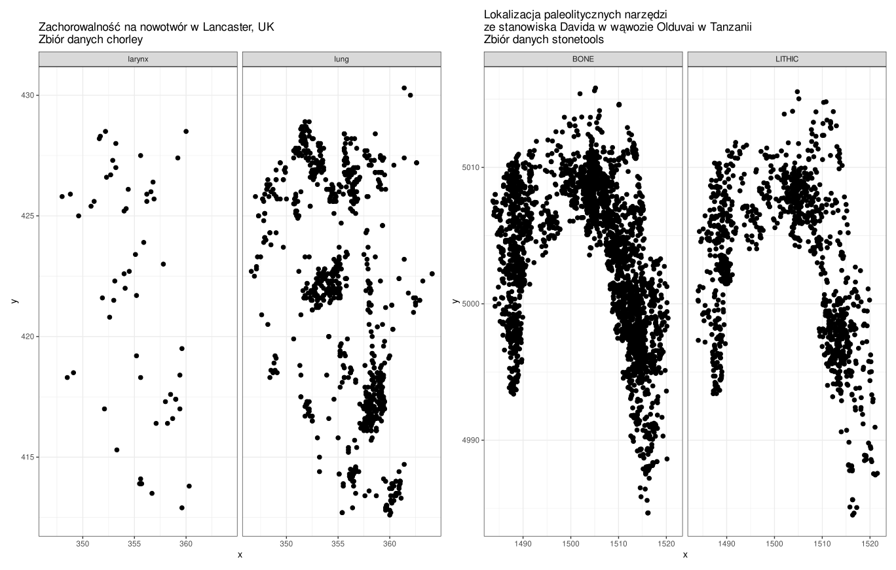
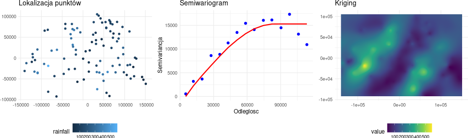
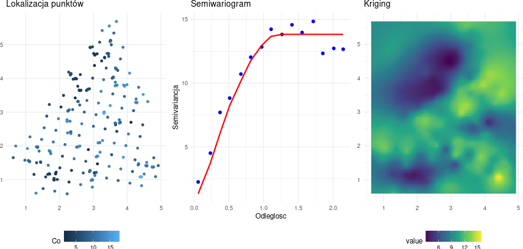
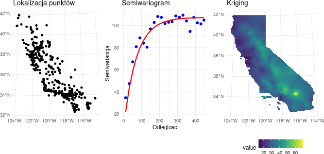
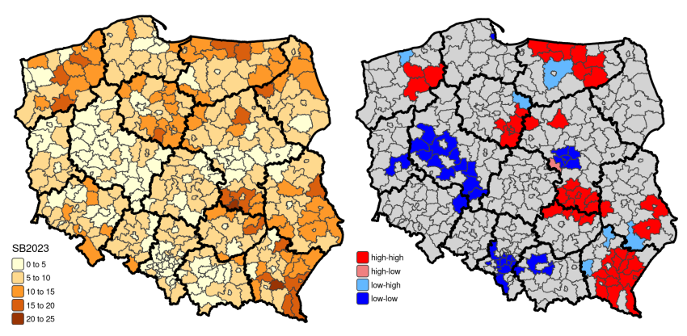

2 Zastosowania statystyki przestrzennej
2.1 Główne nurty metodologiczne w statystyce przestrzennej
Ze względu na rodzaj analizowanych danych w statystyce przestrzennej można wyróżnić trzy główne nurty:
- analizę danych punktowych (ang. point pattern analysis)
- geostatystykę
- metody analizy danych obszarowych i punktowych atrybutowych.
Griffith (1999) wśród metod statystyki przestrzennej wyróżnia:
- analizę danych punktowych
- geostatystykę
- autoregresję przestrzenną
- metody wizualizacji danych
2.2 Analiza danych punktowych (bezatybutowych)
2.2.1 Cel
określenie w jaki sposób dane obiekty/zdarzenia są rozmieszczone w przestrzeni.
- Czy punkty są rozmieszczone losowo? (tzn. na ich rozmieszczenie nie działa żaden czynnik lub zależą od wielu czynników które się wzajemnie znoszą)
- Czy punkty są romieszczone regularnie? (tj. efekt świafomego działania, nie jest to proces naturalny)
- Czy występują skupiska (klastry) punktów? (tzn. na rozmieszczenie punktów wpływa jakiś czynnik)
rozpoznanie wzorca rozmieszczenia punktów w przestrzeni jest podstawą do wykrycia zależności przestrzennych.
2.2.2 Dane punktowe
Przykładami danych punktowych bezatrybutowych są:
- dane epidemiologiczne dotyczące występowania przypadków zachorowań
- rozkłady występowania określonych gatunków roślin czy zwierząt.
2.2.3 Przykłady danych punktowych: zbiory danych z pakietu spatstat


2.2.4 Zastosowanie
Analiza przestrzennych danych punktowych jest stosowana w wielu dziedzinach:
biologia, ekologia, botanika -
- rozmieszczenie gatunków roślin,
- rozmieszczenie gatunków ptaków i ich lęgowisk
- badanie rozkładu gatunków drzew w przestrzeni (badanie rozmieszczenia roślin stało się pierwowzorem technik analizy przestrzennych danych punktowych)
epidemiologia - rozprzestrzenianie się chorób (wirusów, bakterii)
ochrona zdrowia - obszary występowania chorób zakaźnych, nowotworów
nauki ekonomiczne - przestrzenne zróżnicowanie zjawisk ekonomicznych, np. dochodów, bezrobocia
archeologia
- zróżnicowanie lokalizacji stanowisk archeologicznych w kontekście rozwoju społeczno-środowiskowego
- analiza wzorców stanowisk stanowi mocną metodę zrozumienia preferencji lokalizacji stanowisk w archeologii.
geografia
- rozprzestrzenianie się pożarów
2.3 Geostatystyka
- Geostatystyka to gałąź statystyki skupiająca się na przestrzennych lub czasoprzestrzennych zbiorach danych.
- Uwzględnia w analizie przestrzenną i czasową lokalizację.
- Podstawą opisu struktury przestrzennej jest semiwariogram - funkcja określająca zależność pomiędzy średnim zróżnicowaniem wartości analizowanej cechy i odległością między punktami pomiaru (zakłada się, że podobieństwo wartości maleje wraz z odleglością).
- Początki geostatystyki: lata 60.XX w. (francuski matematyk G. Matheron w 1963 roku zaproponował metodę krigingu opartą mająca na celu optymalizacje szacowania parametrów geologicznych).
2.3.1 Cel
- zrozumienie zmienności przestrzennej lub czasowej zjawiska
- szacowanie wartości dla całego obszaru (dane ciągłe) na podstawie danych punktowych (estymacja)
- określenie prawdopodobieństwa przekroczenia w danym punkcie lub obszarze wartości progowej
- Optymalizacja próbkowania oraz sieci monitoringowych
2.3.2 Przykłady zastosowania
Modelowanie zmienności przestrzennej opadów na podstawie zbioru danych sic97 (Spatial Interpolation Comparison 1997 data set: Swiss Rainfall) z pakietu gstat przedstawiającego 100 pomiarów wysokości opadów w obszarze Szwajcarii.

Modelowanie zmienności przestrzennej zanieczyszczenia gleb (zmienna Co) na podstawie zbioru danych jura z pakietu gstat. Zbiór danych przedstawia pomiary zanieczyszczenia gleby metalami ciężkimi w 259 lokalizacjach. Zbiór danych jura pochodzi z ksiązki Pierre Goovaerts’ (Goovaerts, P. 1997. Geostatistics for Natural Resources Evaluation. Oxford Univ. Press, New-York, 483)

Modelowanie zmienności przestrzennej zanieczyszczenia powietrza w Kalifornii (średnia zawartość Ozonu w latach 1980-2009) na podstawie zbioru danych airqual z pakietu rspat.

2.3.3 Zastosowanie geostatystyki
Geostatystyka jest stosowana obecnie w wielu dyscyplinach, takich jak: geologia naftowa, oceanografia, geochemia,logistyka, leśnictwo, gleboznawstwo, hydrologia, meteorologia, epidemiologia.
Górnictwo, geologia, eksploracja zasobów naturalnych:
- szacowanie rezerw mineralnych,
- charakterystyki złoża,
- optymalizacji miejsc wierceń.
- https://geojournals.pgi.gov.pl/bp/article/view/28824/pdf
Zarządzanie kryzysowe
- ocena ryzyka związanego z klęskami żywiołowymi, takimi jak trzęsienia ziemi, osuwiska i powodzie, w celu opracowania strategii zarządzania katastrofami i łagodzenia ryzyka.
Rolnictwo
- analizę jakości gleby,
- prognozowanie plonów
- precyzyjne rolnictwo poprzez pomiar zmienności przestrzennej właściwości gleby.
Geografia
- ocena zanieczyszczeń, np. mapy zanieczyszczeń powietrza.
Hydrologia
- modelowanie głębokości wód gruntowych,
- prognozowanie występowania opadów
- ocena ryzyka powodzi poprzez analizę wzorców przestrzennych zmiennych hydrologicznych.
Epidemiologia i geografia zdrowia
- badanie przestrzennego rozmieszczenia chorób,
- analiza dostępu do opieki zdrowotnej i
- przewidywania wybuchów chorób w różnych lokalizacjach.
Ubezpieczenia i finanse:
- wykorzystywane w branży ubezpieczeniowej do oceny i zarządzania ryzykiem związanym z klęskami żywiołowymi lub rozprzestrzenianiem się chorób w celu decydowania o odpowiednich składkach i skutecznego zarządzania portfelami.
2.4 Autokorelacja przestrzenna danych obszarowych
2.4.1 Cel
- analiza podobieństwa i różnic między obszarami/regionami
- wyszukanie obszarów podobnych do siebie
- znalezienie obszarów znacząco różnych od sąsiednich
- kluczowe zadanie: określenie, które obszary ze sobą sąsiadują.
2.4.2 Przykład zastosowania
